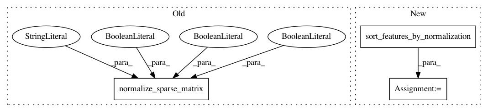

8503569f0ad75fb1e9e962e79306b2e8e127f947,ml/rl/test/gridworld/gridworld_continuous.py,GridworldContinuous,preprocess_samples,#GridworldContinuous#Any#Any#Any#,101
Before Change
False,
)
saa = StackedAssociativeArray.from_dict_list(samples.actions, "action")
action_matrix, _ = preprocessor.normalize_sparse_matrix(
saa.lengths,
saa.keys,
saa.values,
self.normalization_action,
"action_norm",
False,
False,
False,
)
saa = StackedAssociativeArray.from_dict_list(
samples.next_actions, "next_action"
)
next_action_matrix, _ = preprocessor.normalize_sparse_matrix(
After Change
next_state_matrix, _ = sparse_to_dense(
saa.lengths, saa.keys, saa.values, sorted_state_features
)
sorted_action_features, _ = sort_features_by_normalization(
self.normalization_action
)
saa = StackedAssociativeArray.from_dict_list(samples.actions, "action")
action_matrix, _ = sparse_to_dense(
saa.lengths, saa.keys, saa.values, sorted_action_features
)
In pattern: SUPERPATTERN
Frequency: 3
Non-data size: 3
Instances
Project Name: facebookresearch/Horizon
Commit Name: 8503569f0ad75fb1e9e962e79306b2e8e127f947
Time: 2018-10-12
Author: jjg@fb.com
File Name: ml/rl/test/gridworld/gridworld_continuous.py
Class Name: GridworldContinuous
Method Name: preprocess_samples
Project Name: facebookresearch/Horizon
Commit Name: 8503569f0ad75fb1e9e962e79306b2e8e127f947
Time: 2018-10-12
Author: jjg@fb.com
File Name: ml/rl/test/gridworld/gridworld_base.py
Class Name: GridworldBase
Method Name: preprocess_samples_discrete
Project Name: facebookresearch/Horizon
Commit Name: 8503569f0ad75fb1e9e962e79306b2e8e127f947
Time: 2018-10-12
Author: jjg@fb.com
File Name: ml/rl/training/ddpg_predictor.py
Class Name: DDPGPredictor
Method Name: export_critic